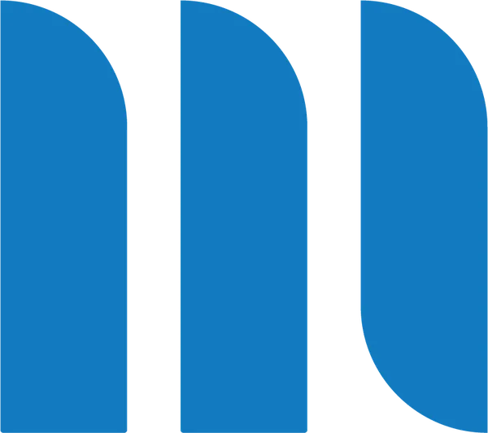
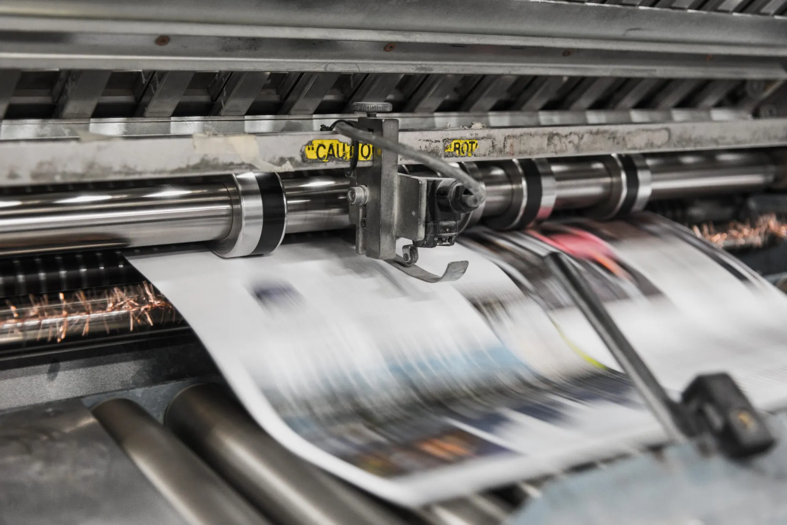
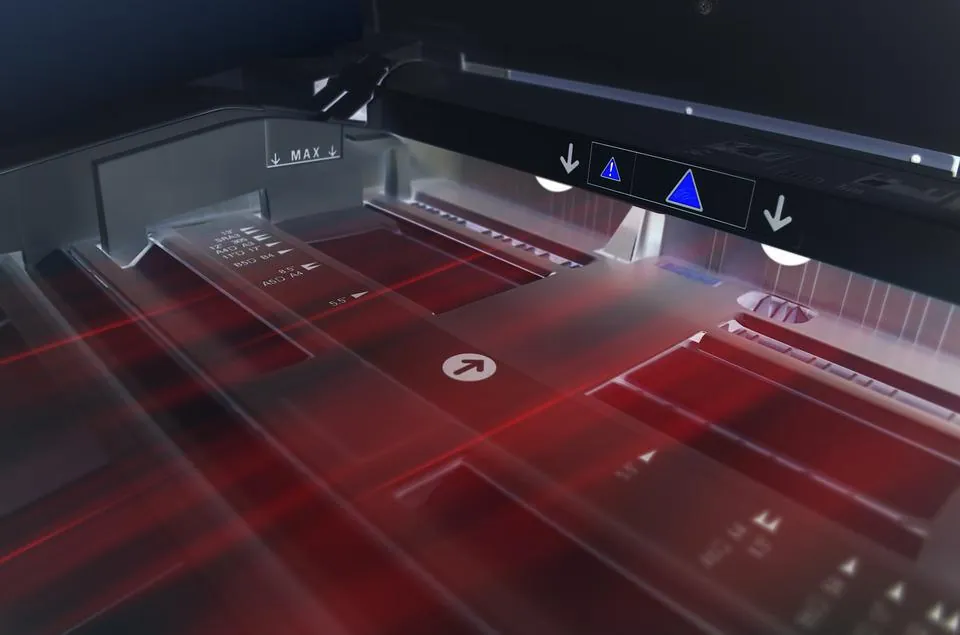
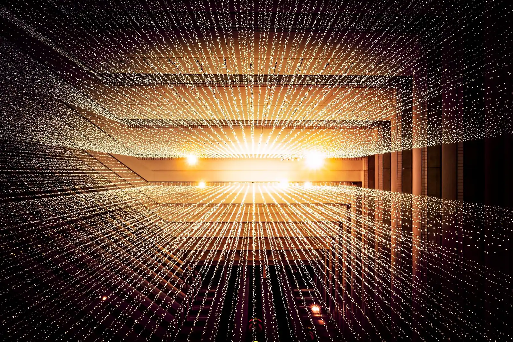

Print Solutions
Imprimantes et multifonctions fiables et écologiques, pour les besoins de toute l’entreprise.
Lexmark · Kyocera · RISO
MASSET 0848 800 847Entreprise familiale spécialisée dans les solutions d’impression et la gestion des systèmes d’information, depuis plus de 70 ans, avec quatre agences en Suisse romande.

Garantir sécurité, fiabilité et cohérence de l’ensemble de vos solutions informatiques et d’impression, et rester disponibles pour assurer la continuité de votre activité.
Imprimantes et multifonctions fiables et écologiques, pour les besoins de toute l’entreprise.
Lexmark · Kyocera · RISOGestion électronique des documents : indexer, classer et retrouver vos documents, en local ou dans le cloud.
e-Doc PremiumSauvegardes, virtualisation et cloud suisse, pour que votre activité ne s’arrête pas.
Masset Cloud ComputingÉcrans tactiles et tableaux interactifs pour vos réunions, vos présentations et vos salles de classe.
Un département dédié aux professionnels de l’impression et aux centres éditique : jet d’encre de production et laser haut volume.
Utilisées au quotidien, les solutions d’impression peuvent vite engendrer des surcoûts financiers et environnementaux. Masset vous propose des solutions fiables et écologiques, de haute productivité.
Les produits sont choisis pour durer, avec moins d’interventions techniques et des composants à longue durée de vie. Pour les gros volumes, le département Productive Printing travaille avec trois technologies :

Des flux de communication et de validation automatisés, pour éliminer les tâches administratives superflues et harmoniser le travail des collaborateurs.
Face aux rançongiciels, Masset propose des sauvegardes immuables, non modifiables, qui peuvent s’installer dans votre infrastructure actuelle ou sur son cloud distant.
S’y ajoutent la sauvegarde à distance dans le cloud Masset, pour se protéger en cas de vol, d’incendie ou de dégât d’eau, et la virtualisation, pour plus de flexibilité sur votre matériel.

Masset est une entreprise familiale. Le groupe, engagé dès sa création en 1946 dans une démarche de développement durable, réunit deux entités : Masset SA, qui maîtrise vos flux documentaires (systèmes d’information, GED, impression, interactivité), et Maye SA, qui optimise vos espaces de travail en alliant esthétique et ergonomie.
Yan Bonzon, directeur général : « Dans un monde professionnel connecté où la relation homme-machine est quotidienne, avoir l’assurance que son matériel est adapté à son activité est primordial. »
Les techniciens sont répartis dans les différentes régions, avec un objectif : pouvoir vous dépanner dans la demi-journée. Ils suivent les formations des marques représentées.
Une assistance à distance est disponible par TeamViewer. La même philosophie s’applique à l’environnement : papier recyclé, recto-verso, collecte des consommables usagés.
7h30–12h00
13h30–17h00
9h00–12h00
14h00–16h30
Téléchargement de TeamViewer disponible sur le site de Masset.